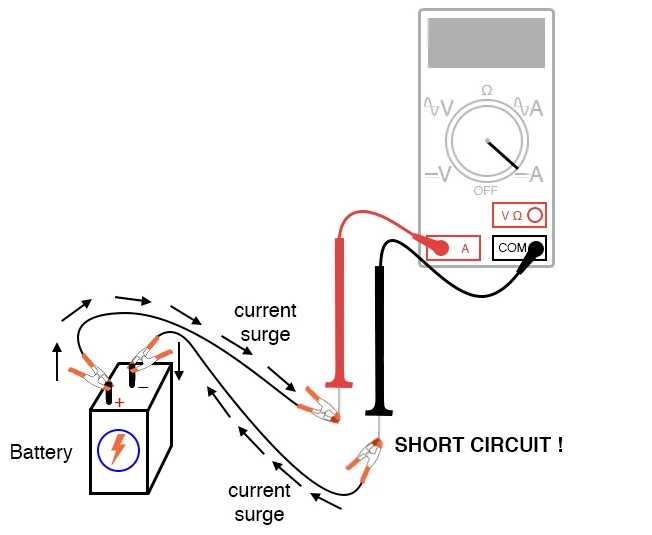

Ammeter
What is an Electric coli?
Current is the measure of the rate of electron “flow” in a circuit. It is measured in the unit of the Ampere, simply called “Amp,” (A).
The most common way to measure current in a circuit is to break the circuit open and insert an “ammeter” in series (in-line) with the circuit so that all electrons flowing through the circuit also have to go through the meter.
Because measuring current in this manner requires the meter be made part of the circuit, it is a more difficult type of measurement to make than either voltage or resistance.
Some digital meters, like the unit shown in the illustration, have a separate jack to insert the red test lead plug when measuring current.
Other meters, like most inexpensive analog meters, use the same jacks for measuring voltage, resistance, and current.
Consult your owner’s manual on the particular model of meter you own for details on measuring current.
When an ammeter is placed in series with a circuit, it ideally drops no voltage as current goes through it.
In other words, it acts very much like a piece of wire, with very little resistance from one test probe to the other.
Consequently, an ammeter will act as a short circuit if placed in parallel (across the terminals of) a substantial source of voltage. If this is done, a surge in current will result, potentially damaging the meter:
